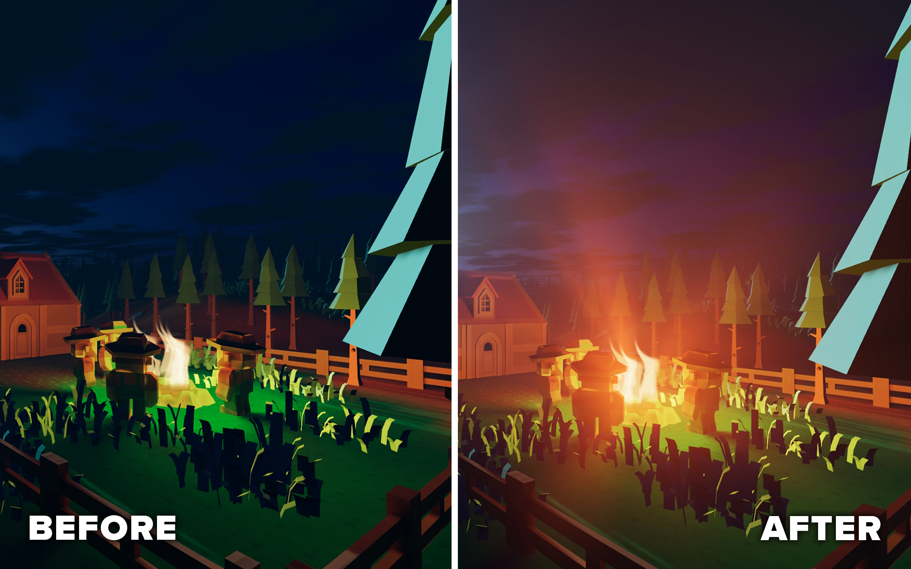

Motivation
I recently started working on the public release of an effect I did for Misgiven. The shader does render fake volumetric lights, also known as god rays or crepuscular rays.
The effect is cheap and effective in creating the illusion of volumetric lights.

While the original code was done in just ~2 days, now I had the time to dig deeper and offer both a better UX and better performance. (In this article however, I will only look into the graphics-programmer side of things.)
Shameless self-promotion: You can find the release + demo down below on itch.io
The God Ray Shader
The full asset consisted of multiple shaders for masking, composing, etc. The most interesting shader is, of course, the one that creates the actual god rays. It’s basically done with two ingredients: zoom blur and disk blur.
Zoom Blur
Zoom blur looks similar to what would happen if you took a photo with a long exposure while changing the zoom factor. In the case of the god ray shader, it is the most important ingredient.
Mask out a portion of the image, mostly the larger area where the light is emitted from, apply zoom blur to it, and blend it back to the original image. Voilà, you’ve created the illusion of light beams. Calculating the samples for this effect is not very expensive on its own.
Disk Blur (Using The Vogel Disk Sample Pattern)
The Vogel disk is a pleasant-looking procedural pattern that looks similar to a sunflower. It can be used to blur an image with a circle-like shape, by sampling the image multiple times and averaging the result. Each time we sample, we use a different position on the Vogel disk. This shadertoy demonstrates the look of this pattern.
For the god ray shader, I use it to make the light beams appear softer, which I find very visually pleasing.
Paths For Optimization
Upon reviewing the code, I finally had the time to address a concern I had with the original code:
Should I pre-compute all the sample positions on the CPU or compute them on the fly?
After all, computing the Vogel disk uses sin(), cos() and sqrt(). These functions are notorious for being slow, or, to be more specific, running over multiple clock cycles.
Below are two variants I’ve tested:
#1 On-The-Fly
The Vogel disk and zoom blur positions are calculated on-the-fly.
vec2 VogelDiskSample(int sampleIndex, int sampleCount, float phi)
{
float sampleIndexf = float(sampleIndex);
float sampleCountf = float(sampleCount);
float goldenAngle = 2.39996;
float r = sqrt((sampleIndexf + 0.5) / sampleCountf);
float theta = sampleIndexf * goldenAngle + phi;
return vec2(cos(theta), sin(theta)) * r;
}
// ...
vec4 fragment_shader() {
// ...
for(int softnessSmpIdx = 0; softnessSmpIdx < softnessSmpCount; softnessSmpIdx++)
{
// Compute the sample on-the-fly
vec2 sample = VogelDiskSample(softnessSmpIdx, softnessSmpCount, 0.0) * blurRadius;
for(int radialIdx = 0; radialIdx < radialSmpCount; radialIdx++)
{
// Compute the radial blur on-the-fly
float stepSize = radialIdx * rangePerSample;
vec2 uv = uvCentered * (1.0 + stepSize) + uvOffset ;
buffer += texture(iChannel0, uv);
}
}
// ...
}
#2 Pre-Computed
The Vogel disk and the zoom blur positions are pre-calculated on the CPU.
Using pre-computed data is also called a Look-Up-Table or LUT.
vec4 fragment_shader() {
// ...
for (int smpIndex = 0; smpIndex < sampleCount; smpIndex++)
{
// Both Vogel and radial are pre-computed.
vec4 sampleTS = sampleLut[smpIndex];
vec2 uvCentered = screenUv - sampleTS.zw;
vec2 uv = uvCentered * sampleTS.xy + sampleTS.zw;
buffer += texture(iChannel0, uv);
}
// ...
}
Just from looking at the size of the code, the pre-computed version should run faster, because more code = more work, right?
Even when looking at the amount of assembler instructions (in DXBC), the same picture forms:
- On-The-Fly: 46 instructions
- Pre-Computed: 26 instructions (-56%)
But after all, we can’t be certain, so let’s run some benchmarks.
| GTX 1050 Ti - 1/3 | RTX 4070 - 1/3 Resolution | RTX 4070 - Full Resolution | |
|---|---|---|---|
| On-The-Fly | 10.0ms | 0.87ms | 3.16ms |
| Pre-Computed | 10.3ms (+3%) | 0.95ms (+9%) | 3.78ms (+16%) |
Huh, what is going on here? Why is the version with more instructions faster?
The Impact Of Memory Latency
There is a second and often overlooked factor in performance, not only in the case of shaders, which is memory latency. This refers to the amount of time a processor has to wait to load a value from memory, mostly a significant time.
The on-the-fly method performs faster, because it is not so dependent on memory. It doesn’t need to wait for the memory to know where to sample the texture we are trying to blur. It may have even already calculated that, while it was asking the memory to read the texture from a previous iteration of the loop.
Modern GPUs are in fact able to suspend work on a pixel (or any other work item) while waiting for memory. This is called latency hiding. In our case, the computation of the Vogel disk may be effectively done in parallel, while a thread is waiting for the memory to read the texture. The effectiveness of latency hiding is dependent on the occupancy. For more info, checkout: https://gpuopen.com/learn/occupancy-explained/.
Simplified, the on-the-play method may run like this:
- Compute the value of
uv. - Load/Sample from
iChannel0withuv. - Wait for memory.
- Write the resulting pixel to the frame buffer.
For the Pre-Computed method, the picture is different. Since the texture read itself is dependent on some data that is in memory, a thread needs to wait for that data first, before asking the memory a second time for the texture. At worst, no GPU thread is able to do anything, since all of them are waiting for memory.
Step-by-step it would roughly look like this:
- Ask the memory for
preComputedSamplesFromCPU[smpIndex] - Wait for memory.
- Compute
uvfrom the value ofsampleTS. - Load/Sample from iChannel0 from
uv. - Wait for memory.
- Write the resulting pixel to the frame buffer.
Conclusion
Shader optimization may not always be achieved by reducing the amount of bare metal instructions. As demonstrated, having more instructions for the sake of less memory access may actually increase performance. Care must also be taken when memory reads are dependent on each other, as it is the case with pre-computed version mentioned.
Takeaways
- Don’t let instruction counts fool you. A lower instructions count doesn’t always mean faster execution.
- It is possible for code with more instructions to outperform code with fewer instructions, given enough memory usage.
- Using LUTs can improve speed, but it can also backfire if the memory look-up is slower than doing the actual calculation.
- Avoid memory accesses that is dependent on each other.
- Always profile. Your intuition may not be correct.🙂
Bonus - Hybrid approach
For the sake of completion, I also tried a hybrid version. Here, only the vogel disk samples are pre-computed.
// ...
for (int smpIndex = 0; smpIndex < sampleCount; smpIndex++)
{
// just pre-compute the vogel disk
vec2 sample = vogelDiskSamples[smpIndex] * blurRadius;
for(int radialIdx = 0; radialIdx < radialSmpCount; radialIdx++)
{
float stepSize = radialIdx * rangePerSample;
vec2 uv = uvCentered * (1.0 + stepSize) + uvOffset ;
buffer += texture(iChannel0, uv);
}
}
//...
It has an instruction count of 36. This version actually did perform better than the On-The-Fly method, but just by around ~2%.